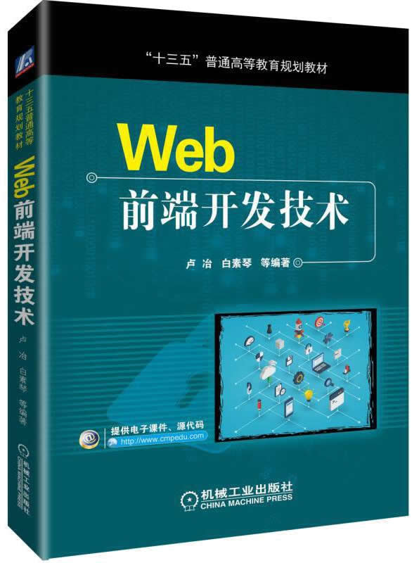

首页 > 书籍下载
《Web前端开发技术》PDF下载（高清完整版）
|  | 作者：卢冶、 白素琴等 |
| 出版时间：2019年04月01日 | |
| 出版社：机械工业出版社 | |
| ISBN：9787111618201 | |
| 总页数：295 | |
| 总字数：46.5W |
这是一本关于 Web 前端开发的书籍，详细地介绍了前端开发的三个基本要素：HTML、CSS 和 JavaScript，涵盖了当前较为流行的 HTML5、CSS3、JQuery 及 Ajax 和 JSON 等技术。非常适合初学者和 Web 应用程序开发人员参考使用。
这里提供的是《Web前端开发技术》的高清 PDF 下载，内容完整，附带目录标签。
本书在内容选择、深度上充分考虑初学者的特点，知识点讲解由浅入深，循序渐进，每章都配备了大量的实例，方便读者阅读、调试和运行，同时，每章都配有相应的习题，使读者加深印象、学以致用。
下面是一位读者朋友对这本书的评价：
适合初学者，内容比较全面、详细，语言精练，读起来也很高效。
书籍目录
- 第1章 HTML基础
- 1.1 HTML简介
- 1.2 基本的HTML标签
- 1.3 HTML链接
- 1.4 HTML图像
- 1.5 HTML表格
- 思考题
- 第2章 HTML第级应用
- 2.1 HTML表单
- 2.2 HTML块
- 2.3 wangzhan布局
- 2.4 HTML文档类型
- 2.5 HTML头部元素
- 2.6 HTML统一资源定位器
- 2.7 HTML多媒体
- 思考题
- 第3章 CSS基础
- 3.1 CSS简介
- 3.2 CSS基础语法
- 3.3 如何创建CSS
- 3.4 CSS选择器
- 3.5 CSS定位与盒模型
- 3.6 CSS实例
- 思考题
- 第4章 JavaScript
- 4.1 简介
- 4.2 使用
- 4.3 基本语法
- 4.4 HTML DOM
- 4.5 对象
- 4.6 Window对象
- 4.7 应用实例
- 思考题
- 第5章 正则表达式
- 5.1 正则表达式简介
- 5.2 正则表达式语法
- 5.3 正则表达式实例
- 思考题
- 第6章 jQuery
- 6.1 jQuery简介
- 6.2 jQuery对象和DOM对象
- 6.3 jQuery选择器
- 6.4 jQuery事件
- 6.5 jQuery中的DOM操作
- 6.6 jQuery遍历节点
- 6.7 jQuery效果
- 6.8 jQuery应用实例
- 思考题
- 第7章 HTML
- 7.1 HTML5简介
- 7.2 HTML5新特性
- 7.3 HTML5文件处理
- 7.4 HTML5视频
- 7.5 HTML5音频
- 7.6 HTML5拖放
- 7.7 HTML5 Canvas
- 7.8 HTML5内联SVG
- 7.9 HTML5 MathML
- 7.10 HTML5地理定位
- 7.11 HTML5 Web存储
- 7.12 HTML5应用程序缓存
- 7.13 HTML5 Web Worker
- 7.14 HTML5服务器发送事件
- 7.15 Web通信
- 思考题
- 第8章 第新的层叠样式表CSS
- 8.1 CSS3简介
- 8.2 CSS3新技术
- 8.3 CSS3应用实例
- 思考题
- 第9章 Ajax技术
- 9.1 Ajax基础
- 9.2 jQuery Ajax
- 思考题
- 第10章 JSON简介
- 10.1 JSON与XML
- 10.2 JSON语法
- 10.3 JSON使用
- 10.4 JSON特点及后台使用
- 10.5 综合应用
- 思考题
- 附录 实验
- 实验一 使用实现wangye特效
- 实验二 使用jQuery实现wangye特效
- 实验三 HTML5表单及文件处理
- 实验四 使用Canvas API画图
- 实验五 获取浏览器的地理位置信息
- 实验六 Web通信
- 实验七 使用CSS3表现页面
- 实验八 Ajax技术应用
书籍下载
一键登录，免费下载完整版 PDF，文件名称：《Web前端开发技术》.pdf